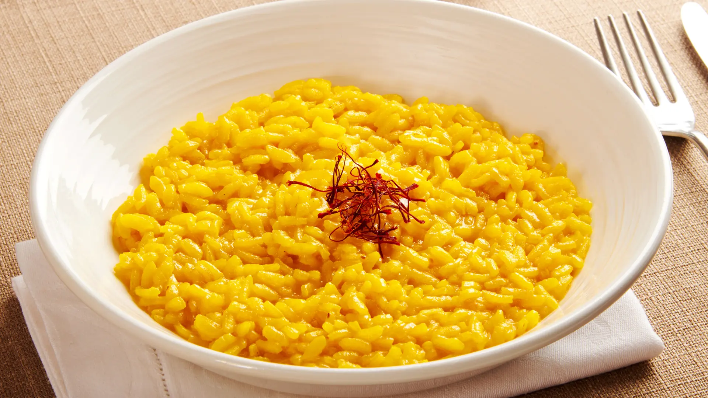

Il meglio della cucina tradizionale italiana

Un piatto elegante e profumato, tipico della cucina lombarda, reso unico dallo zafferano.
👉 per 4 persone
| Ingrediente | Quantità |
|---|---|
| Riso Carnaroli | 350g |
| Burro | 50g |
| Midollo di bue | 30g |
| Zafferano | 1 bustina |
| Brodo di carne | 1L |
| Parmigiano Reggiano | 50g |
| Cipolla | 1 piccola |